Sir GalahadAncienne démo et wiki
Sir GalahadAncienne démo et wiki
Après un uptilt, le coup de pied aérien est remplacé par un direct chargé de Haki.
ATLAS DES MERS
Races, armes, Haki, mers, métiers et notes de recherche. Mis à jour le 27 novembre 2026 avec la compilation communautaire du Movie 3.
Movie 3 montre quatre emplacements Spiritual visibles sur R, T, G et Z (le Movie 2 en décrivait six : le plafond n’est pas confirmé). L’écran Max-Potential montre quatre cases : Fierce, Tactic, Agile et Extra (Title). Voir les deux captures et les configurations.
Armement agit notamment sur la posture et la mêlée, Observation sur la lecture de l’adversaire et l’esquive, et le Haki des Rois sur l’infusion et le contrôle. Les posters Agile, Fierce et Tactic modifient la mobilité, l’attaque et la défense. Les effets et chiffres ci-dessous correspondent aux versions décrites par les sources.
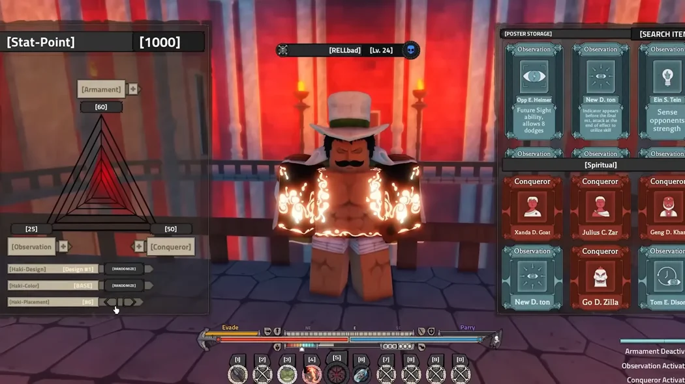
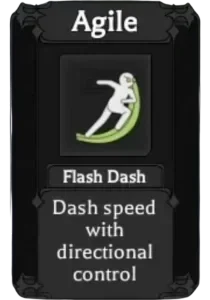

 Sir GalahadAncienne démo et wiki
Sir GalahadAncienne démo et wikiAprès un uptilt, le coup de pied aérien est remplacé par un direct chargé de Haki.
 Sir GawainAncienne démo et wiki
Sir GawainAncienne démo et wikiAugmente la résistance de posture de 20 % dans la démo.
 Sir LancelotAncienne démo et wiki
Sir LancelotAncienne démo et wikiÉlargit la zone du downslam, augmente les dégâts de posture et projette la cible plus haut.
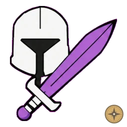
Sir LannisterAncienne démoBonus de dégâts de combat de 4 % dans la version montrée.
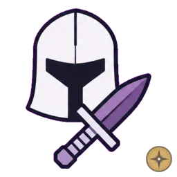
Bri O. TarthAncienne démoRepousse l’attaquant qui brise ta garde avec un coup physique.
 Sie G. FriedAncienne démo
Sie G. FriedAncienne démoLe troisième coup lourd déclenche une onde qui repousse. Le rapprochement avec Sir Sigurd reste à vérifier.
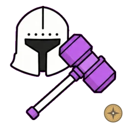
Sir SigurdNom recenséEffet propre inconnu. Les notes du projet évoquent un lien possible avec Sie G. Fried.
 Sir StifmeisterNom recensé
Sir StifmeisterNom recenséEffet inconnu. Le rapprochement avec Ryuo reste une hypothèse du projet.
 Opp E. HeimerAncienne démo et wiki
Opp E. HeimerAncienne démo et wikiFuture Sight accorde jusqu’à huit esquives dans la démonstration.
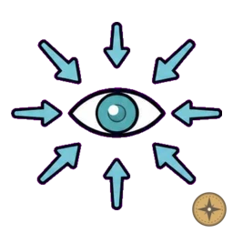
New D. tonAncienne démo et wikiUn repère apparaît avant la dernière attaque de base. La fiche invite à frapper à la fin de l’effet.
 Ein S. TeinAncienne démo et wiki
Ein S. TeinAncienne démo et wikiÉvalue la force de l’adversaire. L’ancienne présentation affiche certains attributs et jauges.
 Dar D. WinAncienne démo et wiki
Dar D. WinAncienne démo et wikiDétecte la présence ou la position des adversaires.
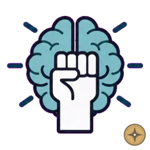
Sigma FreudAncienne démoAllonge de 20 % la fenêtre d’esquive des dashs et des evades dans la version présentée.
 Tom E. DisonAncienne démo
Tom E. DisonAncienne démoTransforme l’evade en contre avec saisie et coup de poing. Un effet proche est attribué à Raman par le wiki récent.
 KanadaWiki post-Movie 3
KanadaWiki post-Movie 3Permet de jauger la force adverse. Effet proche d’Ein S. Tein.
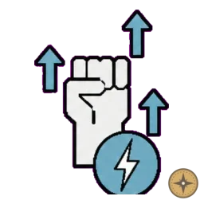
KhwarizmiWiki post-Movie 3Détecte la présence des adversaires. Effet proche de Dar D. Win.
 RamanWiki post-Movie 3
RamanWiki post-Movie 3Change l’esquive en contre avec saisie, coup et projection.
 TaekwondoWiki post-Movie 3
TaekwondoWiki post-Movie 3La garde permet d’éviter des attaques en consommant de l’endurance.
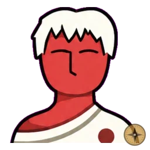
Xanda D. GoatAncienne démoInsuffle le Haki des Rois dans les attaques. Le wiki récent donne un effet proche à Alexander D. Great.
 Alexander D. GreatWiki post-Movie 3
Alexander D. GreatWiki post-Movie 3Imprègne le combat de la volonté du Haki des Rois. Le lien exact avec Xanda D. Goat reste à confirmer.
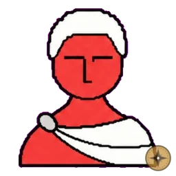
Julius C. ZarAncienne démo et wikiImmobilise des adversaires proches. La description de démo annonce une défense réduite de 15 %. Les cibles exactes du malus restent à vérifier.
 Geng D. KhanAncienne démo
Geng D. KhanAncienne démoUne fois mis à terre, déclenche une onde qui neutralise les attaquants pendant dix secondes dans l’ancienne description. Aussi noté Geng D. Kan.
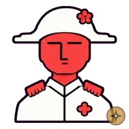
Nap O. LeonAncienne démoLe dégainage donne un bonus de vitesse de dix secondes. Le wiki récent recense Napoleon sans décrire son effet.
Étourdissait les cibles, stoppait les modes actifs et imposait un délai global aux actions dans la description de la démo. Aussi appelé Godkilla dans nos notes.
 Flash DashGuide communautaire
Flash DashGuide communautaireAccélère le dash et permet d’en contrôler la direction.
Ajoute deux sauts Geppo dans l’ancienne description.
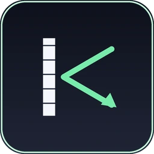
Wall BouncerGuide communautairePermet de rebondir sur les murs.
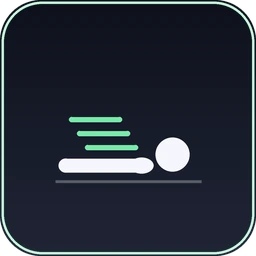
Ronaldo TripGuide communautaireAjoute un tacle glissé pendant un déplacement rapide.
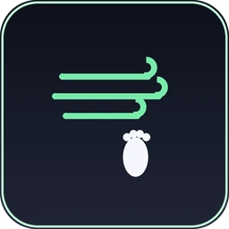
Mr WindstepGuide communautaireAugmente la portée du dash. Le wiki récent emploie aussi Mr Widestep.
 Sir PitcherGuide communautaire
Sir PitcherGuide communautairePermet une poursuite en Geppo Dash après avoir projeté une cible.
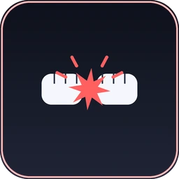
Alpha CrasherGuide communautaireDonne l’avantage dans les clashes d’attaques de base selon l’ancien guide.
Le dernier M1 ferme la distance puis projette l’adversaire vers le haut.
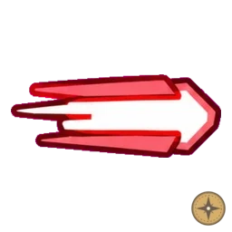
Full StackGuide communautaireUne rupture de garde au coup puissant ouvre une chaîne complète.
 Faster PunchGuide communautaire
Faster PunchGuide communautaireAccélère les coups puissants et augmente leur portée.
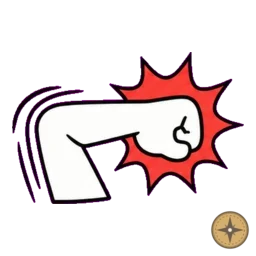
Strong PuncherGuide communautaireFavorise la rupture de garde et le recul au coup puissant.
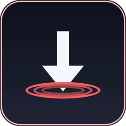
Down GodGuide communautaireAugmente la zone touchée par le downslam. Aussi écrit Downg God.
 James BondGuide communautaire
James BondGuide communautairePermet aux tirs de punir des dashs dotés d’une fenêtre d’invulnérabilité. Le classement de la carte varie selon les listes.
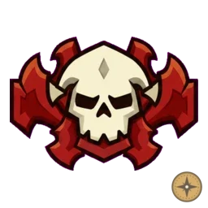
Auto ParryGuide communautairePermet de parer des projectiles en gardant.
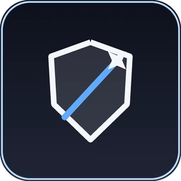
Parry GodGuide communautaireModifie la consommation de jauge de parade. L’ancienne formulation ne précise pas l’unité ni la référence de la valeur.
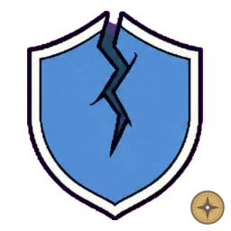
Quick ParryGuide communautaireRéduit le temps de récupération après une parade de 0,5 seconde selon l’ancienne description.
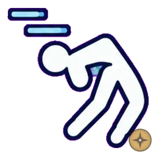
Evade GodGuide communautaireModifie la réaction au recul et à l’étourdissement au sol. Détail de déclenchement à vérifier.
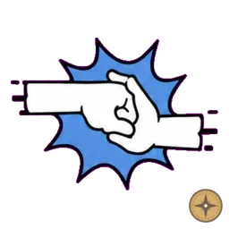
ParryinganGuide communautaireAllonge la fenêtre de parade. La valeur 0,2 est citée dans l’ancienne description.
Index du Haki · Relevé de l’ancienne démo · Combat Potentials · Archives des effets
La quatrième case de Max-Potential affiche « Title » dans Movie 3. Le choix dépend du titre débloqué par ton personnage.
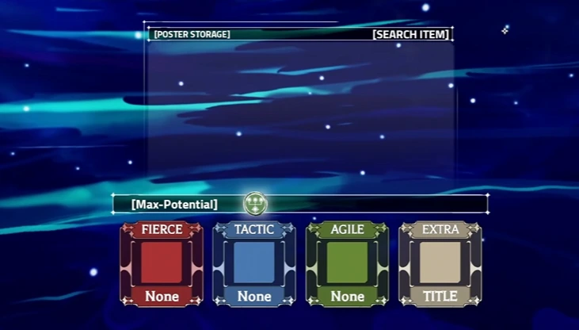
Analyse des captures du Movie 3, mise à jour du 27 octobre 2026. Les capacités lisibles sur les captures sont distinguées des descriptions du Movie 2 et des correspondances spéculatives.
Attention : l’interface affiche 620 Stat-Points restants sur ces captures. Cela ne démontre ni le coût ni le maximum du personnage. Les valeurs anciennes ont pu changer.
Titre POSTER STORAGE, champ SEARCH ITEM, onglet Spiritual et trois icônes rondes qui suggèrent des filtres par famille de Haki. Les trois familles des autres captures sont Armament, Observation et Conqueror ; la correspondance exacte des couleurs n’est pas démontrée.
Quatre emplacements sont visibles : Poster 2 (R), Poster 3 (T), Poster 1 (G), Poster 4 (Z), tous « None ». Des documents du Movie 2 évoquaient six slots Spiritual. Il faut tester si l’écran défile ou si des emplacements se débloquent.
Les slots portent des touches, ce qui suggère une utilisation directe. On ne peut pas affirmer que chaque poster soit un sort actif : des descriptions incluent aussi des passifs et des modifications conditionnelles.
Spiritual est une catégorie d’inventaire affichée. Aucun effet chiffré de la statistique Spiritual sur les posters n’est prouvé.
| Poster | Effet et provenance | Certitude |
|---|---|---|
| Sir Gawain | +20 % de durabilité de posture (texte lisible sur la capture) | Visible Movie 3 |
| Sir Lancelot | Augmente l’AoE du downslam, les dégâts à la posture et la projection | Visible Movie 3 |
| Sir Galahad | L’uptilt devient un puissant coup de poing Haki à la place du coup de pied aérien | Visible Movie 3 |
| Sir Lannister | +4 % de dégâts de combat selon la liste du Movie 2 | Ancien effet |
| Sir Sigurd | Pourrait correspondre à Sie G. Fried : la troisième attaque lourde crée une onde de choc repoussante | Correspondance plausible |
| Sir Stifmeister | Pourrait correspondre à un Armement avancé / Ryuo | Hypothèse faible |
| Sir Percival | Aucun descriptif vérifié dans les sources exploitées | Inconnu |
Ancien poster : Bri O. Tarth repousserait l’adversaire qui brise la garde par attaque physique, mais son équivalent dans le Movie 3 n’est pas identifié. Ne pas l’attribuer automatiquement à Percival ou Stifmeister.
| Poster | Effet | Certitude |
|---|---|---|
| Alexander D. Great | Imprègne les attaques de la volonté du Conquérant | Visible Movie 3 |
| Godkilla | Étourdit les cibles, désactive les modes et impose un cooldown global aux touches affectées | Visible Movie 3 |
| Genghis Khan | Ancien Geng D. Khan : explosion de zone au renversement, attaquants désactivés 10 s selon le Movie 2 | Ancien effet |
| Napoleon | Ancien Nap O. Leon : bonus de vitesse de 10 s à l’équipement d’une arme | Ancien effet |
| Julius Caesar | Ancien Julius C. Zar : immobilisation proche et défense diminuée de 15 % | Ancien effet |
| Hannibal | Aucun effet sûr identifié | Inconnu |
Les valeurs 10 s et 15 % ne sont pas confirmées par les captures du Movie 3.
| Poster | Effet | Certitude |
|---|---|---|
| Khwarizmi | Détecte la présence ennemie | Visible Movie 3 |
| Kanada | Évalue la puissance de l’adversaire | Visible Movie 3 |
| Raman | Ancien Tom E. Dison : esquive transformée en saisie, contre-punch puis projection | Renommage non prouvé |
| Taekwondo | Pourrait modifier la garde ou l’esquive | Inconnu |
| Kanaloa | Icône poing et cerveau, aucun texte lisible | Inconnu |
| Jujutsu | Icône œil et éclair, aucun texte lisible | Inconnu |
Anciens posters Observation à surveiller sans les attribuer arbitrairement : Opp E. Heimer (Future Sight, huit esquives), Sigma Freud (+20 % aux fenêtres d’invulnérabilité des dash et esquives), New D. Ton (indicateur de timing du dernier M1), Tom E. Dison (contre après esquive), Dar D. Win (présence) et Ein S. Tein (puissance). Ces descriptions viennent du Movie 2.
| Build | Posters intéressants si équipables ensemble | Logique |
|---|---|---|
| Tank / Heavy / Lunarian | Sir Gawain, Sir Lancelot, Godkilla, Julius Caesar | Tenir la posture, puis immobiliser et briser la pression |
| Mêlée / Heavy / Oni | Alexander D. Great, Sir Lancelot, Genghis Khan, Godkilla | Attaquer, contrôler et se protéger des combos |
| Agile / Light / Beastman | Khwarizmi, Kanada, Raman, Sir Gawain | Détecter, évaluer, contre-attaquer, résister |
| Tir / Gunsman / Cyborg | Khwarizmi, Kanada, Sir Gawain, Godkilla | Anticiper les approches, garder la distance |
| Exploration / Three Eyes | Khwarizmi, Kanada + deux utilitaires à confirmer | Perception et reconnaissance |
Top PvP théorique : Godkilla (contrôle très fort si les conditions sont acceptables), Sir Gawain (défense garantie à l’écran), Sir Lancelot (posture et combos), Alexander D. Great (infusion potentiellement puissante). Aucun classement final sans cooldowns, coûts, règles de cumul et équilibrage.
The Movie 3 · RELLGames · Captures des emplacements · Captures du Movie 3 transmises le 27 octobre 2026
État des recherches au 27 octobre 2026. Compilation communautaire actualisée après le Movie 3, non officielle. Les dégâts, probabilités d’obtention et statistiques de nombreuses armes restent inconnus.
| Classe | Armements types | Points forts probables | Limites probables | Traits à tester |
|---|---|---|---|---|
| Light | Dagues, rapières, petites épées | Attaques rapides, mobilité, enchaînements | Impact plus faible par coup | Endurance, Health |
| Medium | Katanas, épées standards, lances | Équilibre dégâts, vitesse et portée | Moins spécialisé | Endurance, Health, Defense |
| Heavy | Grandes lames, haches, masses | Fort impact, pression sur la posture, brise-garde | Lenteur et fenêtres de punition | Health, Defense, Endurance |
| Ranged / Gunsman | Pistolets, fusils, snipers, canons portatifs, arcs | Distance et contrôle de zone | Munitions, tempo et approche ennemie à vérifier | Endurance, Defense, Health |
Weapon bond : selon les guides communautaires, le personnage choisirait à la création une affinité durable avec une classe, qui donnerait un bonus d’expérience d’arme. Permanence et valeur exacte non vérifiées. Un bonus d’EXP n’est pas une augmentation de dégâts.
Le catalogue recense 39 entrées, pas 39 armes forcément jouables dès la sortie. Les classes attribuées varient entre l’ancien Fandom et les fiches récentes (par exemple le Leviathan Cleaver). Ne pas les prendre pour définitives.
Un plan n’est pas une arme possédée : c’est une recette ou un objet de connaissance. Ne pas additionner 39 et 23 pour annoncer 62 armes uniques. Yahu Greatsword est aussi recensée comme objet fabricable (Yahu Hide, Yahu Fins, Iron, plus un ingrédient à confirmer).
Moulage, refroidissement, martelage au timing et aiguisage.
Plans fabriqués, butin de boss et exploration. Les sources exactes sont souvent à confirmer.
Mining et Crafting semblent les plus utiles pour les matériaux et la fabrication. Woodcutting aiderait l’économie de ressources, lien exact avec les armes à établir.
Cinq sous-types décrits : sidearms, rifles, snipers, heavy guns et uniques (arc, lance-pierre).
Cannon, Mortar, Chainshot et Grapple sont des systèmes de navire, pas des armes individuelles.
M1, attaques tilt, clashes et éventuelle réflexion des balles par timing. L’implémentation précise peut varier.
Témoignage de joueur, pas un inventaire officiel ni une confirmation de drops. Un autre commentaire dit que les développeurs auraient annoncé Yoru en jeu et non en gamepass, sans vérification indépendante.
| Personnage | Arme évoquée | Recoupement possible |
|---|---|---|
| Smoker | Jitte | — |
| Whitebeard | Bisento | Bisento du catalogue |
| Don Krieg | Daisenso | — |
| Mihawk | Yoru / grande épée | — |
| Brook | Guitare et canne-épée | Soul Guitar, Soul Cane |
| Katakuri | Trident / Mogura | Katakuri’s Trident |
| Shanks | Sabre type Gryphon | — |
| Zoro | Plusieurs sabres, noms non attestés | — |
| Arlong | Arme-scie | Shark Saw |
| Sabo | Pipe | Sabo’s Pipe |
| Fujitora | Canne-épée | Gravity Cane |
| Crocodile | Crochet doré | Golden Hook |
Des images d’armes commandées à l’artiste Yann circulent. Un concept art n’implique ni nom définitif, ni arme jouable, ni date de sortie.
RELL Games a annoncé sur Reddit des showcases plus approfondis des armes, styles et fruits sur CaribBros. Aucune liste exhaustive officielle et définitive n’est établie.
Le manque de démonstrations approfondies de l’arsenal dans le Movie 3 a été critiqué. Le Katana et la forge Yahu sont les mieux détaillés.
| Profil | Race + sous-espèce | Classe / arme | Posters | Pourquoi |
|---|---|---|---|---|
| Tank PvP | Lunarian + Deity | Heavy · grande épée ou hache | Gawain, Lancelot | Défense et coups de posture |
| Duelliste | Oni + Warlord | Heavy · masse ou grande lame | Alexander D. Great, Godkilla | Corps à corps et contrôle |
| Tireur tactique | Cyborg + Superhuman | Gunsman · fusils, Flintlocks | Khwarizmi, Kanada | Identification et mise à distance |
| Aventurier agile | Beastman + Wolf | Light · dague, Cutlass | Raman, Gawain | Esquive et contre-attaque |
| Polyvalent | Human + Human | Medium · Katana ou Trident | Gawain, Lancelot | Adaptable sans bonus racial supposé |
| Explorateur | Marinian + Sharkman | Medium · lance, Trident | Khwarizmi, Kanada | Navigation ; avantage aquatique non confirmé |
| Forgeron combattant | Dwarf + Superhuman | Light ou Medium · arme craftée | Gawain et utilitaires | Mining et Crafting utiles quelle que soit la race |
Le catalogue reprend les entrées de RELL Seas Wiki après Movie 3. Les thèmes décrivent le pouvoir associé au fruit. Des noms, familles et listes diffèrent dans les sources plus anciennes.
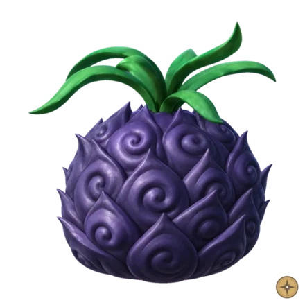
DarkCatalogue communautaireThème associé : obscurité. Les mouvements, dégâts, conditions d’obtention et éventuels éveils demandent une source de gameplay pour ce fruit.
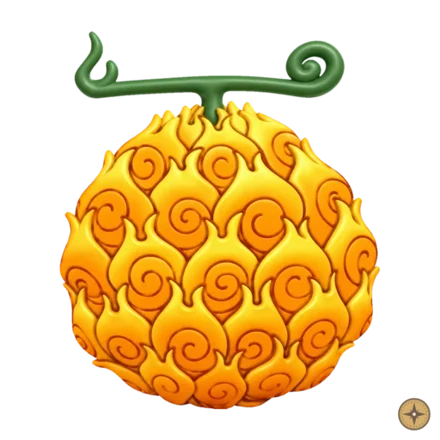
FlameCatalogue communautaireFlame Fist est un projectile de l’arbre Flame. La fiche relève deux passifs, Bigger Impact et Faster Fist, et les nœuds Pyro Laser, Flame Torrent, Pyro Eruption, Ignition Scatter et Flame Mode. L’éveil et les taux restent inconnus. Fiche et démonstrations.
 IceCatalogue communautaire
IceCatalogue communautaireThème associé : glace. Les mouvements, dégâts, conditions d’obtention et éventuels éveils demandent une source de gameplay pour ce fruit.
 LightCatalogue communautaire
LightCatalogue communautaireThème associé : lumière. Les mouvements, dégâts, conditions d’obtention et éventuels éveils demandent une source de gameplay pour ce fruit.
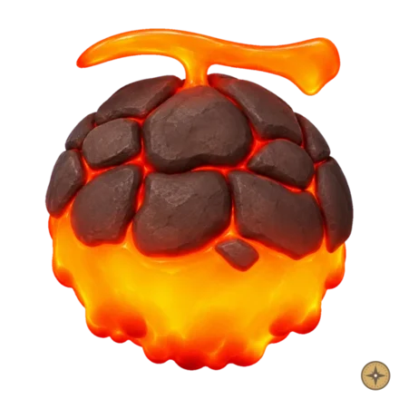
MagmaCatalogue communautaireThème associé : magma. Les mouvements, dégâts, conditions d’obtention et éventuels éveils demandent une source de gameplay pour ce fruit.
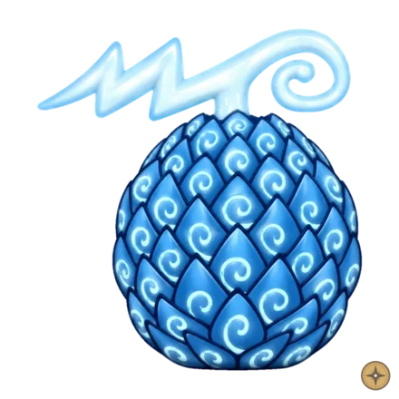
RumbleCatalogue communautaireThème associé : foudre. Les mouvements, dégâts, conditions d’obtention et éventuels éveils demandent une source de gameplay pour ce fruit.
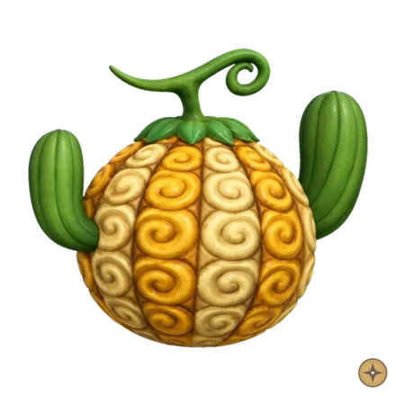
SandCatalogue communautaireThème associé : sable. Les mouvements, dégâts, conditions d’obtention et éventuels éveils demandent une source de gameplay pour ce fruit.
 SmokeCatalogue communautaire
SmokeCatalogue communautaireThème associé : fumée. Les mouvements, dégâts, conditions d’obtention et éventuels éveils demandent une source de gameplay pour ce fruit.
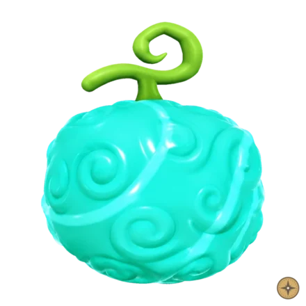
BarrierCatalogue communautaireThème associé : barrières. Les mouvements, dégâts, conditions d’obtention et éventuels éveils demandent une source de gameplay pour ce fruit.
 BombCatalogue communautaire
BombCatalogue communautaireThème associé : explosions. Les mouvements, dégâts, conditions d’obtention et éventuels éveils demandent une source de gameplay pour ce fruit.
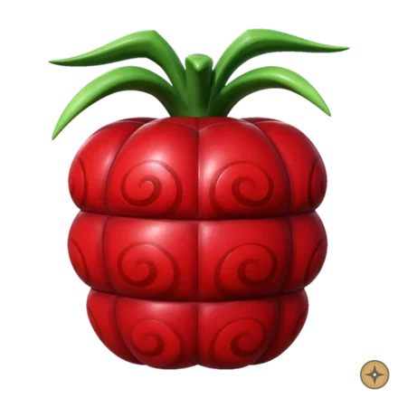
ChopCatalogue communautaireThème associé : séparation du corps. Les mouvements, dégâts, conditions d’obtention et éventuels éveils demandent une source de gameplay pour ce fruit.
 DoughCatalogue communautaire
DoughCatalogue communautaireThème associé : pâte extensible. Les mouvements, dégâts, conditions d’obtention et éventuels éveils demandent une source de gameplay pour ce fruit.
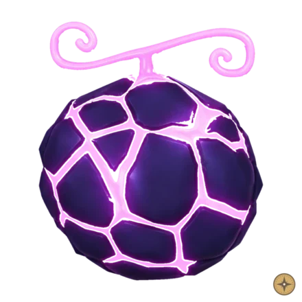
GravityCatalogue communautaireThème associé : gravité. Les mouvements, dégâts, conditions d’obtention et éventuels éveils demandent une source de gameplay pour ce fruit.
 LoveCatalogue communautaire
LoveCatalogue communautaireThème associé : amour et pétrification dans l’inspiration. Les mouvements, dégâts, conditions d’obtention et éventuels éveils demandent une source de gameplay pour ce fruit.
 OperationCatalogue communautaire
OperationCatalogue communautaireThème associé : zone d’opération. Les mouvements, dégâts, conditions d’obtention et éventuels éveils demandent une source de gameplay pour ce fruit.
 PawCatalogue communautaire
PawCatalogue communautaireThème associé : répulsion. Les mouvements, dégâts, conditions d’obtention et éventuels éveils demandent une source de gameplay pour ce fruit.
 QuakeCatalogue communautaire
QuakeCatalogue communautaireThème associé : secousses. Les mouvements, dégâts, conditions d’obtention et éventuels éveils demandent une source de gameplay pour ce fruit.
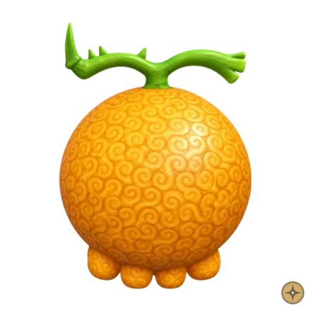
ReviveCatalogue communautaireThème associé : résurrection dans l’inspiration. Les mouvements, dégâts, conditions d’obtention et éventuels éveils demandent une source de gameplay pour ce fruit.
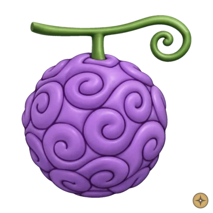
RubberCatalogue communautaireThème associé : élasticité. Les mouvements, dégâts, conditions d’obtention et éventuels éveils demandent une source de gameplay pour ce fruit.
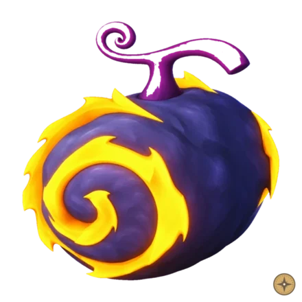
SoulCatalogue communautaireThème associé : âmes. Les mouvements, dégâts, conditions d’obtention et éventuels éveils demandent une source de gameplay pour ce fruit.
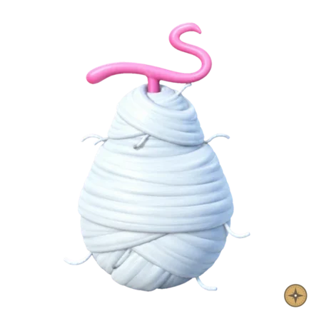
StringCatalogue communautaireThème associé : fils. Les mouvements, dégâts, conditions d’obtention et éventuels éveils demandent une source de gameplay pour ce fruit.
 VenomCatalogue communautaire
VenomCatalogue communautaireThème associé : poison. Les mouvements, dégâts, conditions d’obtention et éventuels éveils demandent une source de gameplay pour ce fruit.
 AllosaurusCatalogue communautaire
AllosaurusCatalogue communautaireThème associé : allosaurus. Les mouvements, dégâts, conditions d’obtention et éventuels éveils demandent une source de gameplay pour ce fruit.
 BisonCatalogue communautaire
BisonCatalogue communautaireThème associé : bison. Les mouvements, dégâts, conditions d’obtention et éventuels éveils demandent une source de gameplay pour ce fruit.
 FalconCatalogue communautaire
FalconCatalogue communautaireThème associé : faucon. Les mouvements, dégâts, conditions d’obtention et éventuels éveils demandent une source de gameplay pour ce fruit.
 GiraffeCatalogue communautaire
GiraffeCatalogue communautaireThème associé : girafe. Les mouvements, dégâts, conditions d’obtention et éventuels éveils demandent une source de gameplay pour ce fruit.
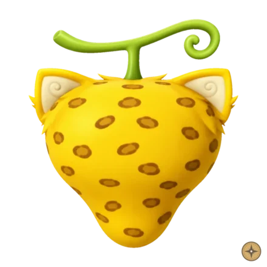
LeopardCatalogue communautaireThème associé : léopard. Les mouvements, dégâts, conditions d’obtention et éventuels éveils demandent une source de gameplay pour ce fruit.
 WolfCatalogue communautaire
WolfCatalogue communautaireThème associé : loup. Les mouvements, dégâts, conditions d’obtention et éventuels éveils demandent une source de gameplay pour ce fruit.
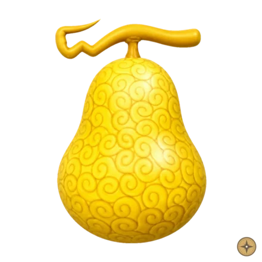
BuddhaCatalogue communautaireForme géante dorée de Daibutsu. Les mouvements détaillés, l’obtention et l’éveil restent à documenter. Voir la fiche source.
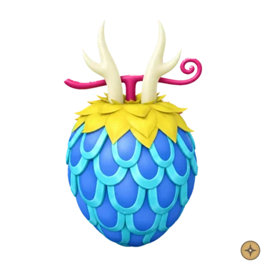
DragonCatalogue communautaireThème associé : dragon. Les mouvements, dégâts, conditions d’obtention et éventuels éveils demandent une source de gameplay pour ce fruit.
 PhoenixCatalogue communautaire
PhoenixCatalogue communautaireThème associé : phénix. Les mouvements, dégâts, conditions d’obtention et éventuels éveils demandent une source de gameplay pour ce fruit.
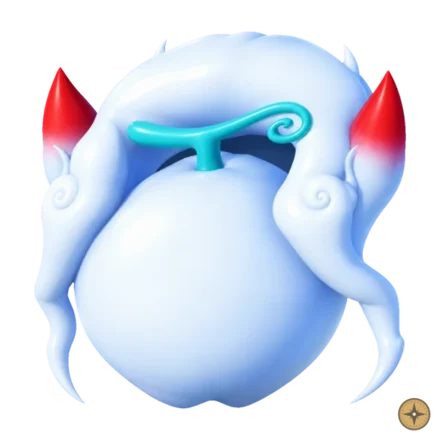
Mythical WolfCatalogue communautaireThème associé : loup mythique. Les mouvements, dégâts, conditions d’obtention et éventuels éveils demandent une source de gameplay pour ce fruit.
Rubber est l’entrée liée au Gomu. Une forme Gear 5 jouable reste à vérifier. Nos anciennes listes citaient aussi Gas, Swamp, Magnet, Shadow, Door et d’autres fruits qui ne figurent pas dans le relevé de 32 ci-dessus. Leur absence du relevé ne renseigne pas sur leur présence finale.
Le menu montre sept noms de mer. Le journal donne des compteurs pour les quatre premières. Les coordonnées et itinéraires complets restent à documenter.
Forestis correspond à la première mer dans l’index. Le nombre désigne les sites de trésor relevés dans le journal de démonstration.
Le clip montre une zone cerclée en rouge à 0:16. Le sens du marqueur reste inconnu.
Le menu de départ liste ce nom. Le rapprochement avec la Mer 3 et ses 84 sites mérite une vérification directe.
La Mer 4 affiche 122 sites dans le journal. Le lien exact avec Desolate Sea n’est pas établi dans l’index.
Le plan précède la séquence sous-marine. Il ne localise pas précisément le monstre ni la route suivie.
Biomes, routes, butin et conditions d’accès encore à documenter.
Le nom figure sur l’écran de sélection. Sa place dans la progression et son contenu restent à vérifier.
Le parcours décrit commence sur une plage jonchée d’épaves et mène à un bateau aux voiles rouges.
Riven A. Graves ouvre le parcours. Les guides situent en ville une forge, une clinique, une auberge et un vendeur de bateaux.
Nom affiché pendant la navigation. Frontières exactes inconnues.
Le wiki décrit six niveaux. Le lieu est aussi nommé dans les paroles officielles du clip.
Le catalogue recense cette zone à part. Sa relation exacte avec les étages de la prison et les routes reste à établir.
Les anciens échanges l’associent à la Mer 6. Accès, coordonnées et état jouable à confirmer.
Le wiki décrit des ruines et un ensemble d’îles flottantes. Un itinéraire fiable et ses prérequis restent à vérifier.
Les guides distinguent les bases navales des villes et prisons. Les conditions d’accès et la carte des bases restent ouvertes.

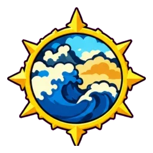

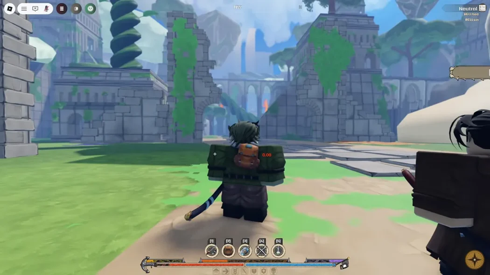

Non confirmée par les développeurs. Les noms Forestis, Motley, Shrouded, Desolate, Sunken, Molten et Uncharted ne prouvent ni le contenu, ni l’ordre des mers. Six mers avaient été évoquées avant : Uncharted Sea pourrait être une zone spéciale plutôt qu’une septième mer.
Rappelle « forest », forêt.
« Motley » signifie disparate, hétéroclite.
« Shrouded » signifie enveloppé, dissimulé.
« Desolate » signifie désert, abandonné.
« Sunken » signifie immergé, englouti.
« Molten » signifie fondu, en fusion.
« Uncharted » signifie non cartographié.
| Catégorie théorique | Noms | Fonction imaginaire |
|---|---|---|
| Découverte | Forestis, Motley | Navigation, apprentissage, factions, économie |
| Mystère et survie | Shrouded, Desolate | Énigmes, difficulté, histoire ancienne |
| Environnements extrêmes | Sunken, Molten | Exploration sous-marine, volcans, ressources de haut niveau |
| Inconnu | Uncharted Sea | Région cachée, frontière ou système de carte |
Les sept noms dessinent peut-être une progression de la nature et des ports vers des mers mystérieuses, dévastées, englouties et volcaniques. Toutes ces zones pourraient aussi être accessibles dans un ordre libre.
Dix races principales sont recensées après le Movie 3, avec leurs sous-espèces. Les mêmes termes peuvent désigner une race et une sous-espèce.
Compilation communautaire mise en fiche le 27 octobre 2026, non confirmée par une source officielle. Noms, rattachements et pourcentages sont à revérifier sur les écrans du jeu. Les bonus, tiers et classements ci-dessous sont des prédictions de game design : les sous-espèces pourraient être purement cosmétiques, auquel cas toutes les combinaisons d’une même race auraient la même puissance. Ne dépense pas de Robux sur leur seule base.
Évoqué dans une première compilation, mais absent du tableau détaillé des races et sous-espèces.
Distinct de Breather et Swimmer selon certaines listes. Apparaît chez Human, Three Eyes et Cyborg.
Le nom Lunars apparaît dans les relevés. Une V2 ou une évolution de Skypiean reste à vérifier.
Traits tirés via Randomize ou, pour certains noms, gagnés par quête. Les bonus rapportés touchent les royaumes, l’XP et certaines classes d’armes.
| Tirage | Valeurs rapportées | Remarque |
|---|---|---|
| Race principale | Human 24,68 % · Avalonian 24,67 % · Three Eyes 5 % | Les autres probabilités restent inconnues. |
| Sous-espèces Human | Human 81,04 % · Dwarf 8,11 % · Finman Breather 3,24 % · Finman Swimmer 3,24 % · Superhuman 1,62 % · Orc 1,08 % · Elf 0,81 % | La somme n’atteint pas 100 % : liste ou chiffres incomplets. |
| Sous-espèces Oni | Jester 1,93 % · Warlord 0,96 % · King 0,38 % · Queen 0,38 % | Ne pas lire ces chiffres comme une distribution exhaustive. |
Scénario où la sous-espèce modifie réellement le gameplay. Les noms King, Queen, Royalty, Goddess ou Deity ne prouvent aucun bonus supérieur : leur place illustre un potentiel thématique, pas un avantage démontré.
| # | Combinaison | Tier | Pourquoi | Incertitude |
|---|---|---|---|---|
| 1 | Lunarian + Deity | S+ | Défense et feu du Lunarian, variante prestigieuse | Aucune preuve de bonus Deity |
| 2 | Marinian + Sharkman | S | Nage, respiration et agressivité aquatique supposées | Compétences non confirmées |
| 3 | Cyborg + Superhuman | S | Résistance et gadgets plus physique, si cumul permis | Cumul non confirmé |
| 4 | Oni + Warlord | S | Archétype offensif de mêlée | Warlord peut être cosmétique |
| 5 | Giant + Dragon | A+ | Portée, force, résistance ou élément supposé | Dragon peut n’être qu’une apparence |
| 6 | Three Eyes + Elf | A+ | Perception et précision ou agilité possibles | Deux effets hypothétiques |
| 7 | Avalonian + Goddess | A+ | Mobilité aérienne et affinité spéciale éventuelle | Goddess peut être un simple titre |
| 8 | Beastman + Wolf | A | Vitesse, pistage et pression en duel | Aucun passif établi |
| 9 | Dwarf + Superhuman | A | Petit gabarit plus puissance physique supposée | Hitbox et cumul incertains |
| 10 | Human + Finman Swimmer | A | Polyvalence terrestre et exploration aquatique | Nage spéciale non confirmée |
| Objectif | Priorité | Alternative |
|---|---|---|
| PvP en mêlée | Oni + Warlord | Cyborg + Superhuman |
| PvP défensif | Lunarian + Deity | Cyborg + Ogre |
| Exploration maritime | Marinian + Sharkman | Human + Finman Swimmer |
| Boss / PvE | Giant + Dragon | Oni + Warlord |
| Mobilité / esquive | Beastman + Wolf | Avalonian + Highborn |
| Observation / découverte | Three Eyes + Elf | Avalonian + Goddess |
| Débutant polyvalent | Human + Human | Cyborg + Human |
Verdict provisoire : Lunarian, Marinian, Cyborg et Oni semblent les archétypes les plus prometteurs si leurs capacités supposées existent. Sans confirmation, aucun meilleur choix objectif n’est établi.
Index des races · Analyse Reddit du menu · Compilation du 27 octobre 2026
Les extraits ouvrent au passage indiqué. Chaque vidéo reste accessible sur YouTube si le lecteur intégré ne charge pas.
Carte du clip officiel et zone cerclée.
Ouvrir au minutage sur YouTubeCarte, monstre sous-marin et avis de danger dans le clip officiel.
Ouvrir au minutage sur YouTubeSAGEz commente les cartes à partir d’images de RELL Games.
Ouvrir au minutage sur YouTubeLe chapitre officiel commence après la présentation de l’apparition et de la destruction du sous-marin.
Ouvrir au minutage sur YouTubeThe Movie 3 officiel · The Movie 2 officiel · Décembre et l’EAC dans Movie 3 · 3:04:47
Les messages de r/RELLseas servent à retrouver des détails et à suivre les discussions. Les récapitulatifs de joueurs peuvent être révisés quand de nouveaux extraits apparaissent.
Le fil décrit une ouverture par vagues, une progression distincte et un passage envisagé de l’EAC à la PAC. Les conditions actuelles de Gold et Silver dépendent des annonces du serveur.
Le post rapproche des emblèmes et des groupes locaux. Ember Pirates et Ivory Smiths sont placés en Mer 1, Jade Moon et Sunset Fury en Mer 2. Les mers et orthographes de certaines autres entrées sont signalées comme incertaines.
Les réactions abordent la création de personnages, la monétisation et le peu d’extraits sur certains fruits et sur le Haki en combat.
Les joueurs débattent du temps laissé aux tests et du silence sur le calendrier. Des observations de fréquentation sur Roblox ne permettent pas d’établir si des tests privés se tiennent.
Décembre était une fenêtre évoquée après Movie 3. Les fils de novembre discutent d’un report, sans fournir de jour officiel ni de preuve d’ouverture.
EAC/PAC · Emblèmes · Réactions à Movie 3 · Attente des tests · Discussion du 26 novembre · Annonce de RELL Games sur Movie 3
Ouvrir le dossier complet des métiers · Créer ton build
Le menu Constellation de Movie 3 organise les statistiques, le potentiel, les talents, les capacités et le Haki. Le wiki relève cinq rangs par métier, des nœuds d’outils et une carte de maîtrise en fin de branche.
La pêche suit une progression de cannes et d’appâts. La cuisine réutilise les prises et autres ingrédients dans des recettes. Le catalogue de Movie 3 documente les poissons et recettes relevés.
Les arbres distinguent le travail des matériaux, la coupe et la collecte de minerai. Les outils relevés incluent des haches, des pioches et des pelles. Movie 3 montre également la forge, les améliorations d’armes et la construction du navire.
Le relevé associe la navigation aux boussoles, à la chasse au trésor et à une cape à la maîtrise. La branche vol comprend des nœuds de serrures et de crochets.
L’arbre comprend des nœuds de potions et de médecine. Movie 3 montre aussi des maladies. Les recettes, déblocages et conditions précises de soin se vérifient dans les fiches individuelles.
Confirmé par la capture du Movie 3 : les Main Traits, les Main Classes et les métiers listés ci-dessous. Non confirmé : effets précis des statistiques, bonus raciaux, coûts de répartition, Haki, synergies et passifs. Tout ce qui suit sur les affinités est une recommandation de build théorique.
Les six stats ne peuvent pas être maxées ensemble, et stats et nœuds de métiers partagent les Stat-Points.
Medium est partiellement masqué sur l’image. Les armes de Medium et Gunsman apparaissent dans des menus ; pour Light et Heavy, la liste n’est pas précisée.
Cinq rangs par métier selon le wiki, avec nœuds d’outils et carte de maîtrise en fin de branche.
Un slot par catégorie selon le wiki. La quatrième case affiche « Title ».
Documentés par le wiki, sans preuve d’un accès libre.
Certains textes sont visibles sur les captures ; les autres effets sont d’anciens leaks. Voir Haki et slots.
| Main Trait | Races potentiellement affines | Raison | Prudence |
|---|---|---|---|
| Health | Giant, Oni, Lunarian | Archétypes robustes, tanks et combattants de mêlée | Aucune augmentation de PV prouvée |
| Endurance | Beastman, Marinian, Avalonian, Dwarf | Course, nage, esquive, mobilité, combats longs | On ignore si Endurance = stamina, vitesse ou autre |
| Defense | Lunarian, Cyborg, Giant, Oni | Protection naturelle, armure, résistance aux coups | Les défenses peuvent être normalisées |
| Spiritual | Three Eyes, Avalonian, Lunarian | Perception, éveil et pouvoirs spéciaux | Aucun lien établi avec Haki ou fruits |
| Will-Power | Oni, Three Eyes, Human, Lunarian | Volonté, concentration, résistance au contrôle | Effet exact inconnu |
| Luck | Human, Dwarf, Three Eyes | Archétypes flexibles et opportunistes | Aucune affinité fondée : identique pour toutes les races, peut-être |
Luck : ne pas investir massivement avant de savoir si elle modifie le loot, les critiques, les tirages ou autre chose.
| Race | Traits prioritaires | Main Class | Raisonnement |
|---|---|---|---|
| Human | Endurance + Will-Power, puis Health | Medium | Base polyvalente et adaptable |
| Three Eyes | Spiritual + Will-Power, puis Endurance | Gunsman ou Medium | Observation, précision et contrôle à distance supposés |
| Avalonian | Endurance + Spiritual, puis Defense | Light | Mobilité, esquive et potentiel aérien |
| Lunarian | Defense + Health, puis Will-Power | Heavy ou Medium | Build résistant, utile pour tenir les combats |
| Oni | Health + Will-Power, puis Defense | Heavy | Archétype de mêlée et de pression |
| Giant | Health + Defense, puis Endurance | Heavy | Frontline et contrôle de zone |
| Cyborg | Defense + Endurance, puis Health | Gunsman ou Heavy | Tir et gadgets, ou armure selon les mécaniques réelles |
| Beastman | Endurance + Health, puis Will-Power | Light | Poursuite et pression mobile |
| Marinian | Endurance + Health, puis Defense | Light ou Medium | Mobilité aquatique et combat prolongé |
| Dwarf | Endurance + Defense, puis Luck si utile | Light ou Gunsman | Esquive et profil compact supposés |
| Classe | Profil | Traits à tester | Races pressenties |
|---|---|---|---|
| Light | Attaques rapides, esquive, mobilité | Endurance + Health ou Will-Power | Beastman, Avalonian, Marinian, Dwarf |
| Medium | Équilibre vitesse, dégâts et portée | Endurance + Health + Will-Power | Human, Three Eyes, Marinian, Lunarian |
| Heavy | Gros impacts, garde, résistance | Health + Defense + Endurance | Oni, Giant, Lunarian, Cyborg |
| Gunsman | Combat à distance, précision, gestion de ressources | Endurance + Defense ; Spiritual si les compétences l’utilisent | Cyborg, Three Eyes, Dwarf |
Choix prudent sans données de gameplay : Medium + Health/Endurance pour débuter ; Light + Endurance si tu aimes la mobilité ; Heavy + Health/Defense pour le corps-à-corps ; Gunsman seulement si tu préfères jouer à distance. Ne bloque pas de points sur Luck, Spiritual ou Will-Power avant d’en connaître les effets.
| Sujet | Éléments recensés | Confiance |
|---|---|---|
| Main Classes | Light, Medium, Heavy, Gunsman | Élevé · Movie 3 |
| Six Main Traits | Health, Endurance, Defense, Spiritual, Will-Power, Luck | Élevé · Movie 3 |
| Talents métiers | Fishing, Cooking, Crafting, Woodcutting, Mining, Navigation, Thieving, Doctor | Élevé · catalogue |
| Catégories d’armes | Medium : cutlass, katanas, swords ; Gunsman : pistols, rifles, bazookas | Élevé pour ces exemples |
| Combat Potentials | Agile, Fierce, Tactic ; un slot par catégorie | Wiki de fans |
| Styles de combat | Black Leg, Dragon Claw Fist, Rokushiki | Wiki, accès non prouvé |
| Haki | Armament, Observation, Conqueror ; textes visibles sur les captures | Textes visibles Reste : anciens leaks |
| Armes emblématiques | Yahu, Leviathan, Katana, tridents, objets craftables | Variable |
| Fruits optionnels | Gravity, Flame, Rubber, Ice, Rumble, Quake, Buddha, Phoenix, Paw | Catalogue communautaire |
| Races et sous-espèces | Dix races de la compilation du Movie 3 | Non exhaustif |
| Buffs raciaux, slots Haki, synergies fruit/style, stats chiffrées | Non démontrés | Hypothèses |
À éviter : supposer que « Light ou Heavy » donne automatiquement tous les types d’armes légères ou lourdes. Les affectations proposées sont des hypothèses à valider.
Index des 199 entrées de talents avec filtres et fiches individuelles · Catalogue des objets de Movie 3
Le projet visait un capitaine agressif façon Xebec ou Shanks, avec une signature visuelle de Haki, de la mobilité et un finisher.
Go D. Zilla pour casser l’élan d’un groupe, Julius C. Zar pour créer une fenêtre de pression et une carte de détection pour repérer l’adversaire. Tester le rayon et les délais dès que possible.
Détection ou Future Sight, épée lourde si le rythme convient et bonus au dégainage d’après l’ancienne fiche de Nap O. Leon. La possibilité et les règles du dual-wield restent à vérifier.
Base sans fruit, avec Rubber comme piste si une forme Gear 5 est montrée en jeu. Les effets visuels de Haki et les buffs de combat peuvent se régler séparément dans les anciennes présentations.
Index des talents et cartes de métier · Inventaire des objets montrés dans Movie 3
 JujutsuNom recensé
JujutsuNom recensé HannibalNom recensé
HannibalNom recensé JumperGuide communautaire
JumperGuide communautaire